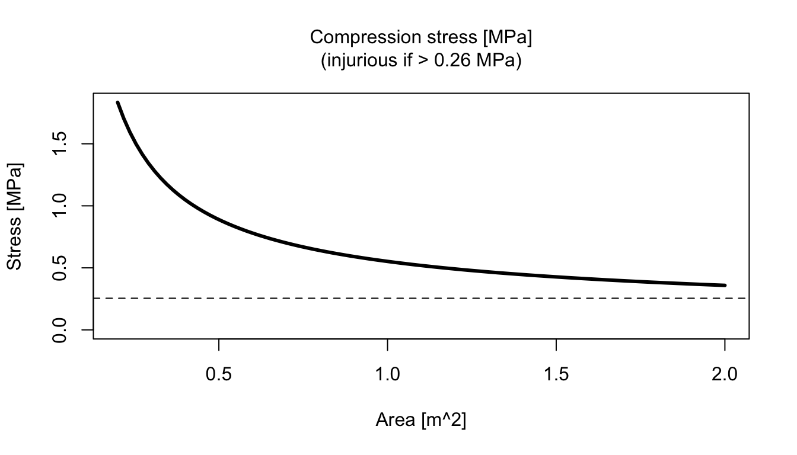

vignettes/whalestrike.Rmd
whalestrike.RmdAbstract. This vignette explains the basics of using the whalestrike package to simulate the collision of a ship with a whale.
This package solves Newton’s second law for a simple model of a ship colliding with a whale. This is a stripped-down model that does not attempt to simulate the biomechanical interactions that can be simulated in finite-element treatments such as that of Raymond (2007). The goal is to establish a convenient framework for rapid computation of impacts in a wide variety of conditions. The model runs quickly enough to keep up with mouse movements to select conditions, in a companion R shiny app. That app lets the user see the effects of changing contact area, ship speed, etc., as a way to build intuition for scenarios ranging from collision with a slow-moving fishing boat to collision with a thin dagger-board of a much swifter racing sailboat. Another advantage of the simple formulation is that it makes it easy to modify various dynamical and biomechanical parameters, to add new forces, and to explore a range of criteria for whale damage.
The documentation for strike() provides an example of
using the main functions of this package, and so it is a good place to
start. A companion manuscript is intended to provide more detail about
the analysis and the context.
The following launches a GUI application that should be somewhat self-explanatory.
library(whalestrike)
app2() # or app(), which is an older versionThe following shows how to run a simulation and produce a simple
summary plot. (Setting the second argument of plot() gives
access to about a dozen plot types.) The left panel shows position of
ship as a dashed curve, while the whale is indicated with three curves,
the top being an imagined point mass in the whale interior, the one
below it being the interface between sub-layer and blubber, and the one
below that being the whale skin. (Actually, the skin is so thin that
what seems to be a thick line is actually two lines.) The impact occurs
when the ship line contacts the whale-skin line, at about 0.3s, and
lasts about 0.5s.
The middle shows a cross section of whale skin, blubber and sub-layer. Note the thinning of the bottom two layers, indicative of high compressive stress associated with the impact of the boat.
The right panel shows the Lethality Index (LI), a quantity that was devised by examination of the published reports of whale strikes. In the analysis, reports of “No Injury” and “Minor Injury” were assessed as having a lethality of 0, while reports of “Severe Injury” or “Mortality” were assigned as having a lethality of 1. These observed lethalities were then fitted with a logistic model as a function of the base-10 logarithm of the maximum compressive stress during a simulation of the event using [strike()], using published or inferred whale and ship characteristics. Simulations in which the peak LI exceeds 0.5, as in the case shown below, are indicative of serious risk to the life of the whale.
library(whalestrike)
#> Loading required package: bslib
#>
#> Attaching package: 'bslib'
#> The following object is masked from 'package:utils':
#>
#> page
#> Loading required package: deSolve
#> Loading required package: shiny
t <- seq(0, 1, length.out = 200)
state <- list(xs = -2.5, vs = knot2mps(10), xw = 0, vw = 0) # 10 knot ship
parms <- parameters() # defaults
sol <- strike(t, state, parms)
par(mfcol = c(1, 3), mar = c(3.3, 3, 1, 2), mgp = c(2, 0.7, 0), cex = 0.7)
plot(sol)Exercises. Rerun the simulation with different parameters, e.g. (1) lower the speed until the peak LI is below 0.5, (2) vary whale length to consider the effects of strikes on immature animals, and (3) model strikes near the mandible, by altering the thickness, modulus, and strength of the sublayer. (See the documentation for parameters to learn how to set the relevant parameters of the ship and whale, and use that for strike to learn about setting vessel speed and the simulation time interval.)
This example shows how to extract information from a sequence of
simulations, to create a graphical display that is not part of the
default list. For clarity, this is done with a loop rather than using
e.g lapply.
library(whalestrike)
t <- seq(0, 1, length.out = 200)
state <- list(xs = -1.5, vs = knot2mps(10), xw = 0, vw = 0) # 10 knots
area <- seq(0.2, 2, length.out = 100)
stress <- rep(NA, length.out = length(area)) # compressive stress [MPa]
for (i in seq_along(area)) {
L <- sqrt(area[i])
parms <- parameters(Ly = L, Lz = L)
sol <- strike(t, state, parms)
stress[i] <- max(sol$WCF$stress) / 1e6
}
#> Warning in strike(t, state, parms): increasing from 200 to 4772 time steps, to capture acceleration peak
danger <- parms$s[2] / 1e6
plot(area, stress,
type = "l", xlab = "Area [m^2]", ylab = "Stress [MPa]",
ylim = c(0, max(stress))
)
lines(area[stress >= danger], stress[stress >= danger], lwd = 3)
abline(h = danger, lty = "dashed")
mtext(sprintf("Compression stress [MPa]\n(injurious if > %.2f MPa)", danger),
side = 3, line = 1
)
Exercise. Look at the help for
plot.strike(), to learn how to examine skin stress in the y
and z directions separately, and then explore the effect of adjusting
impact geometry, at constant area.
This example shows how to create a matrix of simulation results, in order to display dependence of a result upon two parameters. Here, the display shows the maximum compressive strain as a function of ship speed and blubber thickness. Note that the contour lines are thickened when the strain exceeds an estimate of the ratio of blubber ultimate tensile strength to blubber modulus.
library(whalestrike)
t <- seq(0, 1, length.out = 200)
# Hint: the following creates x and y of different lengths,
# so that mismatches between row/col and i/j values will
# yield errors.
l2 <- seq(0.1, 0.25, length.out = 5) # blubber thickness
speedK <- seq(4, 15, length.out = 5) # in knots
speed <- knot2mps(speedK)
# stress = peak stress during each simulation, in MPa
stress <- matrix(NA, nrow = length(speed), ncol = length(l2))
l <- parameters()$l
for (i in seq_along(l2)) {
for (j in seq_along(speed)) {
state <- list(xs = -1.5, vs = speed[j], xw = 0, vw = 0)
parms <- parameters(l = c(l[1], l2[i], l[3], l[4]))
sol <- strike(t, state, parms)
stress[j, i] <- max(sol$WCF$stress) / 1e6
}
}
danger <- parms$s[2] / 1e6
contour(speedK, l2, stress,
levels = seq(0, danger, 0.1),
xlab = "Speed [knots]", ylab = "Blubber thickness [m]"
)
contour(speedK, l2, stress, level = danger, lty = 2, add = TRUE, drawlabels = FALSE)
contour(speedK, l2, stress, level = seq(3, danger, -0.1), lwd = 2, add = TRUE)
mtext(sprintf(
"Compression stress [MPa]\n(injurious if > %.2f MPa, dashed contour)",
danger
), side = 3, line = 1)Exercise. Explore the effect of varying sublayer properties and thickness on this graph.
The documentation for the whalestrike package provides
many references to the literature. A good start is to use
help("strike",package="whalestrike") to get help on a key
function of the package.